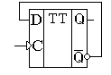
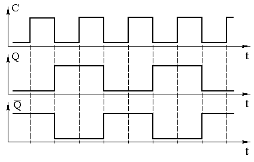
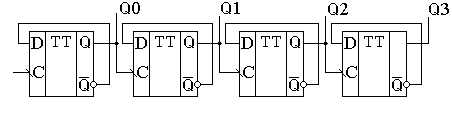
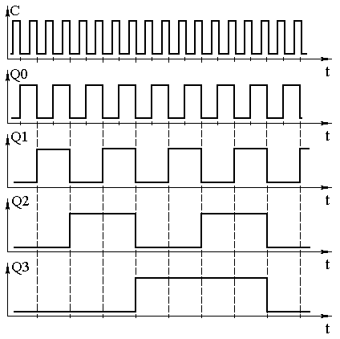
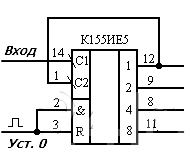
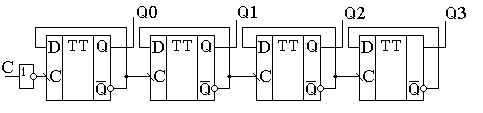
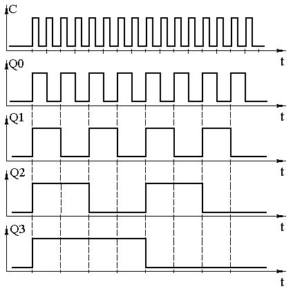
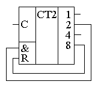
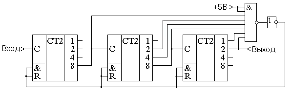
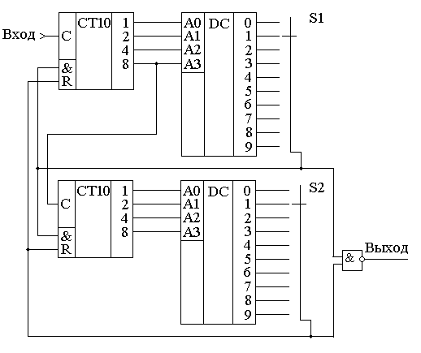

Счётчики
Счетчик импульсов — это последовательностное цифровое устройство, обеспечивающее хранение слова информации и выполнение над ним микрооперации счета, заключающейся в изменении значения числа в счетчике на 1. По существу счетчик представляет собой совокупность соединенных определенным образом триггеров. Основной параметр счетчика — модуль счета. Это максимальное число единичных сигналов, которое может быть сосчитано счетчиком.
Счётчики используются для построения таймеров или для выборки инструкций из ПЗУ в микропроцессорах. Они могут использоваться как делители частоты в управляемых генераторах частоты (синтезаторах). При использовании в цепи ФАП счётчики могут быть использованы для умножения частоты как в синтезаторах, так и в микропроцессорах. Счетчики импульсов - непременные узлы электронных часов, микрокалькуляторов, частотомеров и многих других приборов и устройств цифровой техники. Основой их служат триггеры со счетным входом. По логике действия и функциональному назначению счетчики импульсов подразделяют на цифровые счетчики и делители частоты. Первые из них обычно называют просто счетчиками.
Простейшим одноразрядным счетчиком импульсов может быть JK-триггер и D-триггер, работающий в счетном режиме. Он считает входные импульсы по модулю 2-каждый импульс переключает триггер в противоположное состояние. Один триггер считает до двух, два соединенных последовательно считают до четырех, n триггеров - до 2n импульсов. Результат счета формируется в заданном коде, который может храниться в памяти счетчика или быть считанным другим устройством цифровой техники-дешифратором.
Счетчики импульсов классифицируют
по модулю счета:
- двоично-десятичные;
- двоичные;
- с произвольным постоянным модулем счета;
- с переменным модулем счета;
по направлению счета:
- суммирующие;
- вычитающие;
- реверсивные;
по способу формирования внутренних связей:
- с последовательным переносом;
- с параллельным переносом;
- с комбинированным переносом;
- кольцевые.
Двоичные асинхронные счётчики
Простейший вид счётчика - двоичный может быть построен на основе T-триггера. T-триггер изменяет своё состояние на прямо противоположное при поступлении на его вход синхронизации импульсов. Для реализации T-триггера можно воспользоваться универсальным D-триггером с обратной связью, как это показано на рисунке 1.

Рис. 1 - Построение счетного T-триггера на универсальном D-триггере.
В этой схеме, так как на вход триггера подается сигнал с инверсного выхода микросхемы, при поступлении тактовых импульсов сигнал на выходе будет меняться с 0 на 1 и наоборот. Временная диаграмма сигналов на входе и выходах триггера приведена на рисунке 2.

Рис. 2 - Временная диаграмма работы T-триггера
Таким образом у нас появился счётчик, считающий до двух. Обычно требуется посчитать количество импульсов, которое больше двух. В этом случае можно использовать выходной сигнал счетного триггера как входной сигнал для следующего триггера, то есть соединить триггеры последовательно. Так можно построить любой счётчик, считающий до максимального числа, кратного степени два.
Схема счётчика, позволяющего посчитать до 16 импульсов приведена на рисунке 3, а временная диаграмма сигналов на входе и выходах этого счётчика приведена на рисунке 4.

Рис. 3 - Схема четырёхразрядного счётчика, построенного на универсальных D-триггерах.

Рис. 4 - Временная диаграмма четырёхразрядного счётчика.
Как видно из временной диаграммы, на выходах этого двоичного счётчика последовательно появляются цифры от 0 до 15. Естественно эти цифры записаны в двоичном виде. Они приведены в таблице 1. То есть, при поступлении на счётный вход очередного импульса, содержимое счётчика увеличивается на 1. Поэтому такие счётчики получили название суммирующих двоичных счётчиков.
Таблица 1
| Номер входного импульса | Q3 | Q2 | Q1 | Q0 |
|---|---|---|---|---|
| 0 | 0 | 0 | 0 | 0 |
| 1 | 0 | 0 | 0 | 1 |
| 2 | 0 | 0 | 1 | 0 |
| 3 | 0 | 0 | 1 | 1 |
| 4 | 0 | 1 | 0 | 0 |
| 5 | 0 | 1 | 0 | 1 |
| 6 | 0 | 1 | 1 | 0 |
| 7 | 0 | 1 | 1 | 1 |
| 8 | 1 | 0 | 0 | 0 |
| 9 | 1 | 0 | 0 | 1 |
| 10 | 1 | 0 | 1 | 0 |
| 11 | 1 | 0 | 1 | 1 |
| 12 | 1 | 1 | 0 | 0 |
| 13 | 1 | 1 | 0 | 1 |
| 14 | 1 | 1 | 1 | 0 |
| 15 | 1 | 1 | 1 | 1 |
Существуют готовые микросхемы асинхронных двоичных счётчиков. Классическим примером такого счётчика является микросхема К155ИЕ5, содержащая в своем составе четыре счетных триггера (рис. 5) .

Рис. 5 - Двоичный четырехразрядный счетчик К155ИЕ5
Входом первого триггера является вывод 14, а выходом - вывод 12. Три остальных триггера соединены последовательно, входом первого триггера является вывод 1, а выходами этих триггеров - выводы 9, 8, 11. Для обеспечения последовательной работы всех четырех триггеров следует соединить выводы 1 и 12. Триггеры переключаются спадом импульса (в отличие от микросхемы К155ТМ2). Установку всех триггеров в нулевое состояние осуществляют кратковременной подачей напряжения высокого уровня на оба входа & и R. Частота импульсов на выходах 1, 2, 4, 8 соответственно в 2, 4, 8, 16 раз меньше частоты входного сигнала. Таким образом, период работы счетчика равен 16 входным импульсам.
Двоичные вычитающие асинхронные счётчики
Счётчики могут не только увеличивать своё значение на единицу при поступлении на вход импульсов но и уменьшать его. Такие счётчики получили название вычитающих счётчиков. Для реализации вычитающего счётчика достаточно чтобы T-триггер срабатывал по переднему фронту входного сигнала. Это можно осуществить инвертированием этого сигнала. В схеме, приведенной на рисунке 6, для реализации вычитающего счётчика сигнал на входы последующих триггеров подаются с инверсных выводов предыдущих триггеров.

Рис. 6 - Схема четырёхразрядного двоичного вычитающего счётчика на универсальных D-триггерах.
Временная диаграмма этого счётчика приведена на рисунке 7. По этой диаграмме видно, что при поступлении на вход счётчика первого же импульса на выходах появляется максимально возможное для четырёхразрядного счётчика число 15. При поступлении следующих импульсов содержимое счётчика уменьшается на единицу. Этот процесс продолжается до тех пор, пока содержимое счётчика не станет вновь равно 0.

Рис. 7 - Временная диаграмма четырёхразрядного вычитающего счётчика.
Все возможные состояния сигналов на выходах счётчика при поступлении импульсов на вход микросхемы приведены в таблице 2.
Таблица 2
| Номер входного импульса |
Q3 | Q2 | Q1 | Q0 |
|---|---|---|---|---|
| 0 | 0 | 0 | 0 | 0 |
| 1 | 1 | 1 | 1 | 1 |
| 2 | 1 | 1 | 1 | 0 |
| 3 | 1 | 1 | 0 | 1 |
| 4 | 1 | 1 | 0 | 0 |
| 5 | 1 | 0 | 1 | 1 |
| 6 | 1 | 0 | 1 | 0 |
| 7 | 1 | 0 | 0 | 1 |
| 8 | 1 | 0 | 0 | 0 |
| 9 | 0 | 1 | 1 | 1 |
| 10 | 0 | 1 | 1 | 0 |
| 11 | 0 | 1 | 0 | 1 |
| 12 | 0 | 1 | 0 | 0 |
| 13 | 0 | 0 | 1 | 1 |
| 14 | 0 | 0 | 1 | 0 |
| 15 | 0 | 0 | 0 | 1 |
Для тех, кто привык работать с реально выпускаемыми микросхемами, следует обратить внимание, что для примера были использованы D-триггеры, работающие по заднему фронту. Микросхемы 1533ТМ2 (два D-триггера в одном корпусе) срабатывают по переднему фронту, поэтому схемы для суммирующего и вычитающего счётчика поменяются местами.
Недвоичные счётчики с обратной связью.
Если посмотреть на временную диаграмму сигналов на выходах двоичного счётчика, приведённого на рисунке 4, то можно увидеть, что частота сигналов на его выходах будет уменьшаться в два раза по отношению к предыдущему выходу. Это позволяет использовать счетчики в качестве делителей частоты входного сигнала. Эти делители частоты могут быть использованы в устройствах формирования высокостабильных генераторов частоты (синтезаторов частот). Частоты могут быть использованы либо для синхронизации цифровых устройств (в том числе и микропроцессоров) либо в качестве задающих генераторов радиоприёмных и радиопередающих устройств.
При использовании цифровых счётчиков в качестве устройств формирования опорных частот может потребоваться обеспечить коэффициент деления, отличающийся от степени числа 2. Ещё одна ситуация, когда необходимо применять недвоичные счётчики возникает при отображении информации, записанной в счётчике. Человек, который работает с электронной техникой, привык работать с десятичной системой счисления, поэтому возникает необходимость отображать хранящееся в счётчике число в непосредственно десятичном виде. Это намного проще сделать, если и счет вести сразу в двоично-десятичном коде. Иначе для индикации потребуется перекодировать информацию из двоичного в двоично-десятичный код.
Построить недвоичный счётчик можно из двоичного за счёт выбрасывания лишних комбинаций единиц и нулей. Это может быть осуществлено при помощи обратной связи. Для этого при помощи дешифратора определяется число, соответствующее коэффициенту счёта, и сигнал с выхода этого дешифратора обнуляет содержимое двоичного счётчика. В качестве примера на рисунке 8 приведена схема двоично-десятичного счётчика.

Рис. 8 - Схема десятичного счётчика, построенного на основе двоичного счётчика.
В этой схеме дешифратор построен на двухвходовой схеме "2И", входящей в состав микросхемы двоичного счётчика. Дешифратор декодирует число 10 (1010 в двоичной системе счисления). В соответствии с принципами построения схем по произвольной таблице истинности для построения дешифратора требуется ещё два инвертора, подключённых к выходам 1 и 4. Однако после сброса счётчика числа, большие 10 никогда не смогут появиться на выходах микросхемы. Поэтому схема дешифратора упрощается и вместо четырёхвходовой схемы "4И" можно обойтись двухвходовой схемой. Инверторы тоже оказываются лишними.
При использовании счётчиков в качестве делителей частоты тоже можно воспользоваться обратной связью. Приведём в качестве примера схему делителя частоты на 1000. При разработке делителя прежде всего определим сколько потребуется микросхем двоичных счётчиков. Для этого определим степень числа 2, при которой число M=2n будет больше требуемого числа 1000. Это будет число 10. При возведении основания системы счисления 2 в 10 степень получится число 1024. То есть, при использовании для построения делителя частоты непосредственно триггеров, достаточно будет десяти триггеров. Однако обычно для построения делителей частоты используют готовые двоичные счётчики, поэтому определим необходимое количество микросхем двоичных счётчиков. При использовании четырёхразрядных двоичных счётчиков достаточно будет трёх микросхем, так как в трёх микросхемах будет 3*4=12 триггеров, что заведомо больше минимального числа триггеров.
Следующим этапом построения делителя частоты будет перевод коэффициента деления 1000 в двоичное представление. Десятичное число 1000 в двоичном виде будет выглядеть как 0011 1110 1000. В этом числе шесть единиц, поэтому для построения делителя будет достаточно шестивходовой схемы "И". Однако такие схемы не выпускаются, поэтому воспользуемся микросхемой "8И-НЕ". Неиспользуемые входы этой микросхемы подключим к питанию. Ненужную нам инверсию сигнала скомпенсируем дополнительным инвертором. Получившаяся схема делителя на 1000 приведена на рисунке 9.

Рис. 9 - Схема делителя на 1000, построенного на основе трёх двоичных счётчиков.
При использовании счётчиков в составе синтезаторов частот может потребоваться формирование целого диапазона частот. В этом случае делитель должен обладать возможностью изменения коэффициента деления (ДПКД). При использовании обратной связи для этого потребуется полный дешифратор и переключатели его выходов на вход сброса счётчика. Схема при этом получается сложной, а управление неудобным. Пример двухразрядного делителя с переменным коэффициентом деления (ДПКД), построенного на десятичных счётчиках приведён на рисунке 4.

Рис. 10 - Схема делителя с переменным коэффициентом деления с максимальным
коэффициентом деления 100,
построенного на основе двух десятичных счётчиков.